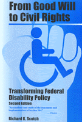

An updated edition of the landmark book on disability policy
An updated edition of the landmark book on disability policy


 An updated edition of the landmark book on disability policy
An updated edition of the landmark book on disability policy

|  |
From Good Will to Civil RightsTransforming Federal Disability PolicySecond EditionRichard K. Scotchpaper EAN: 978-1-56639-897-8 (ISBN: 1-56639-897-5) |
"An excellent case study of the enactment and implementation of Section 504...this book will interest students of the American public policy-making processes as well as those with a special interest in civil rights and disability policy."
—Choice
Now that curb cuts, braille elevator buttons, and closed caption television are commonplace, many people assume that disabled people are now full participants in American society. This book tells a rather different story. It tells how America's disabled mobilized to effect sweeping changes in public policy, not once but twice, and it suggests that the struggle is not yet over.
The first edition of From Good Will to Civil Rights traced the changes in federal disability policy, focusing on the development and implementation of Section 504 of the Rehabilitation Act of 1973. Richard K. Scotch's extensive interviews with policymakers, leaders of the disability rights movement, and other advocates, supplemented the sketchy official history of the legislation with the detailed, behind-the-scenes story, illuminating the role of the disability rights movement in shaping Section 504. Charting the shifts in policy and activist agendas through the 1990s, this new edition surveys the effects and disappointments associated with the Americans with Disabilities Act, passed in 1990, in the context of the continuing movement to secure full civil rights for disabled people.
Excerpt available at www.temple.edu/tempress
"This analysis...is almost certain to become a classic work in the literature that will eventually emerge in this field."
—Contemporary Sociology
"The best thing about Scotch's book is that it shows why, despite the broad rights language of the legislation and its regulations, Section 504 exists in a vacuum, with this country still, for the most part, unconcerned about disability rights.... Advocates should read Scotch's book... It's a good place to start on the future."
—The Disability Rag
"[P]resents the effects and disappointments associated with civil rights legislation including the ADA, and the continuing effort of the civil rights movement for persons with disabilities to secure access and integration into American society. From Good Will to Civil Rights (2nd ed.) is highly recommended for those seeking to understand the civil rights movement for persons with disabilities and the impact that legislation has on this new minority group."
—Journal of Social Work in Disability and Rehabilitation
"A particular strength of this work, aside from the analysis itself, is the author's reliance on the testimony of people involved in developing the policy [of Section 504]."
—H-Net Online
Acknowledgments
1. A Civil Rights Law for Disabled People
2. From Good Will to Civil Rights
3. The Genesis of Section 504
4. Writing the Regulation for Section 504
5. Advocacy and the HEW Regulation
6. Policy Dissemination
7. Symbolic Victories: The Evolution of Section 504
Epilogue
Appendixes
Notes
Index
Richard K. Scotch is Professor of Sociology and Political Economy School of Social Sciences, University of Texas at Dallas.
Disability Studies
Political Science and Public Policy
Health, Society, and Policy, edited by Sheryl Ruzek and Irving Kenneth Zola.
No longer active.
Health, Society and Policy, edited by Sheryl Ruzek and Irving Kenneth Zola, takes a critical stance with regard to health policy and medical practice, ranging broadly in subject matter. Backlist titles include books on the legal and professional status of midwifery, the experience and regulation of kidney transplants, the evolution of federal law on architectural access, and a political/ethical argument for making the community responsible for universal access to health care.
© 2015 Temple University. All Rights Reserved. This page: http://www.temple.edu/tempress/titles/348_reg.html.